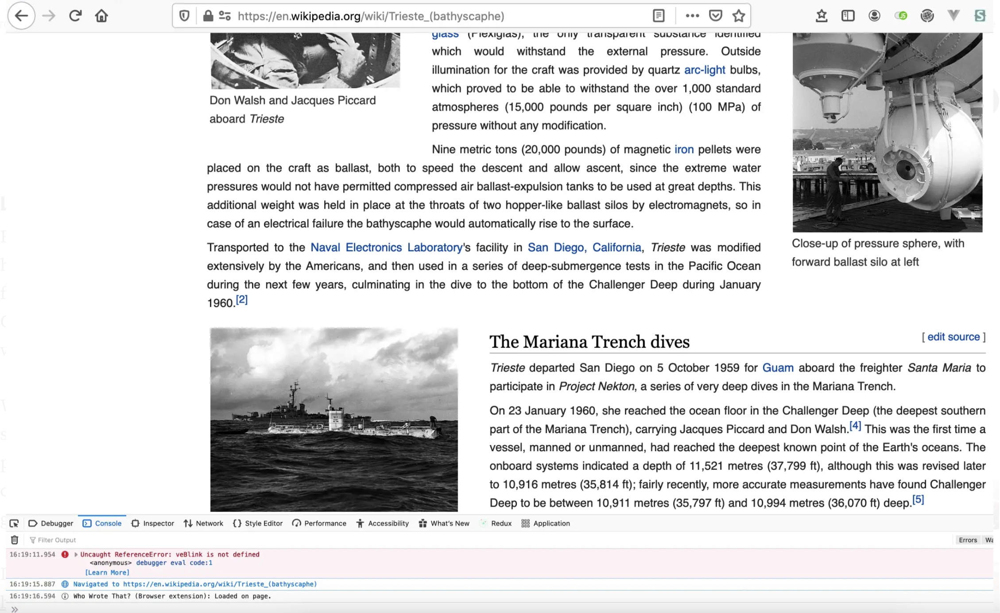
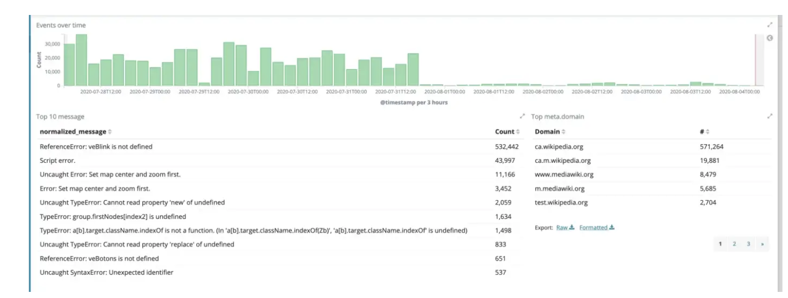

Jon Robson (David Lyall)
Sep 28, 2020 · 10 min read ·
Diving into Wikipedia’s ocean of errors
How we went from an error counter to fixing our code
This blog post was also posted on my personal blog and the Wikimedia tech blog.
A while back I wrote about debugging an issue on mobile armed only with an error counter and referrer information. Thankfully I’m pleased to report that we are now tracking and fixing client side JavaScript errors for Wikimedia wikis which is providing more error-free experiences to our end users. In this blog post I wanted to document what led us to prioritizing it; how we went about implementing a solution; and what we learned from the experience. If you are planning to log client errors in your own project, you may find the summarizing section at the end of the article useful.
Preparing for the voyage
You may have recently heard about how Wikipedia has made a recommendation to adopt Vue. js or how we are redesigning the desktop site. As you can imagine migrating an entire front end stack comes with certain challenges. We were diving into a large technical project with no knowledge of the existing landscape in which we were working in. In fact much of our code hadn’t been touched in some time. In addition to this our mobile error counting had also jumped from 10k a minute to 40k a minute with no obvious cause¹ signally we had introduced a bug somewhere. It was clear to the developers tasked with this work, that sophisticated error handling was a requirement for this project.
Luckily this dovetailed nicely with the scaling up of our Event platform client and a global pandemic where our focus has shifted to site stability. Existing solutions such as raven and Sentry were considered, but given the size of the client libraries comparatively to the rest of the software and out of a desire to minimize additional tools for developers, a decision was made to roll our own client code and send unmodified errors and stacktraces to our existing Kafka-Logstash logging infrastructure².
We had little idea what we would uncover through our explorations.
We had little idea what we would uncover through our explorations of client side errors [ccbysa, source: wikimedia commons]
Preparing for launch was just the start
Before I even got involved in the work, there was an amazing collaboration between the security, performance, operations, analytics and product infrastructure to get everything in place. This effort is tracked on our public task management system for those that are interested in the details. Thanks to the collaboration and planning of these teams, the code for catching errors and sending them to the server ended up being relatively small. This effort culminated in the launch on Hawaiian Wikipedia, one of our less often visited wikis. The challenge now became how to do this at scale.
Thanks to the collaboration and planning of these teams, the code for catching errors and sending them to the server ended up being relatively small. This effort culminated in the launch on Hawaiian Wikipedia , one of our less often visited wikis. The challenge now became how to do this at scale.
Diving into the unknown
We maintain multiple projects and our biggest Wikipedia alone has 293 languages. Its an understatement to say that our ecosystem is complex. You’ve likely read about how bots are widely used in Wikipedia, but many of our users all rely on bespoke tooling to manage a variety of editing activities which are provided by browser extensions and user gadgets (special wiki pages that allow users to write and run their own JavaScript).³
To roll out further, we had to ensure that bugs were getting fixed, information we didn’t care about from user gadgets and scripts did not drown the signals we got from more important errors and most importantly the traffic to the end point was low such that it wouldn’t bring down our services.
We started small on a small wiki for the software that runs our sites: MediaWiki.org. From a product perspective, even though the audience was low, it gave us a hint about what to expect as we rolled out further. The errors logged were a good way to capture very prominent errors e.g. errors occurring on every page view. Many of these errors had very actionable stack traces meaning we could file bugs and fix them, which we did, however others were more cryptic. "Script error.” was one of the most prominent and the most unclear to fix.
The reason we were getting “Script error” was due to the fact that code was being loaded from across our websites. Many of our users were loading gadgets from other wikis. So while this could it be explained, it was not very actionable without a stack trace. However, it did provide the file which caused the error which could be linked to the associated wiki page. Similar to my bug hunting adventures in my previous blog post, it could be used to manually reproduce those errors in exploratory testing.
However, the errors we were seeing on MediaWiki.org represented a small drop in a large ocean of errors for our projects. Despite the rate of errors for these smaller wikis being sufficiently low, we knew that there were more errors out there waiting to be explored, the kind that only come from really stretching the use our software — for example editing a wiki page with complicated markup or copying and pasting a table with thousands of rows! We needed to roll out to larger wikis to help prioritize bug fixing in our product work flow by identifying where in our complex code ecosystem our users were commonly hitting problems in our code. But where to begin?

We looked at traffic first to guide us. We wanted wikis bigger than our current wikis, but not too big. Thanks to the error counter we introduced in our mobile site we were able to get guesstimates of the actual error rates on mobile for possible wikis by looking at referrer traffic. Combining this information with the actual error rates being ingested for Hawaiian Wikipedia and MediaWiki.org for all our traffic and the traffic for all our wikis, we were able to predict the volume of errors for our candidate wikis on desktop too. We choose a wiki which would inform us more about the errors our users were actually facing without overwhelming our event platform. We decided to enable on our Catalan language Wikipedia.
A JavaScript error occurs for an end user deep down inside the developer console, hidden away from the user’s view and previously not seen by our engineers[screenshot, own work, cc by sa].
Lesson one: Not all user errors are equal
Running the client side error tracking on Catalan Wikipedia was really helpful for prioritizing roll out. Due to the larger volume of traffic we went from around 2,000 errors a day to 40,000, however this taught us a lot. Certain errors we were seeing in the same software on our smaller websites were now occurring more frequently which helped us prioritize them.
What became apparent however was certain errors were being repeated by a single IP. We hadn’t been able to notice that with such low traffic. At one point 38,830 of 48,175 errors in a 12 hr period logged to Catalan Wikipedia came from a single IP address who was running some badly maintained gadgets that they had included almost a decade ago.
In another interesting development, from the stack traces we identified a bug related to our map feature which was only occurring on slow connections. When the bug occurred unfortunately it got executed in an interval timer so appeared in high volumes. A patch was provided and that bug was squashed. It turned out this accounted for 50% of our errors on mobile and our error counting graph adjusted accordingly.

As for other bugs, many of them came from faulty and forgotten scripts that users were running. After reaching out to those users, we managed to clean those up.Over the course of 7 days we went from 30,000 errors per 3hrs to a manageable 735
These two incidents once fixed got the error rate down to a very manageable and respectable rate of 735 errors ever 3hrs. A lesson was learned and we began to limit the number of bugs we logged from the same user session to five. With that obstacle out of the way we felt confident to roll out further.
Lesson Two: Not all page JavaScript is equal
With errors limited, the list of errors was much more manageable, however it was clear that many of the stack traces were not useful. In certain cases, the code was clearly coming from places outside of our control. Interestingly we also saw a lot of bugs from browser extensions and non-Wikimedia domains — Google Translate for example and browser extensions like GreaseMonkey that allow the running of locally written JavaScript. Some of these errors did not have any information about stack traces or the source of the error. The noise of this unfortunately made it difficult to identify real errors, so we decided to exclude any errors without information on their origin. If a bug falls and nobody knows what file it came from, is it really a bug?
We however decided to defer the filtering of browser extensions and non-wikimedia sites as this could be taken care of using logstash filtering if needed and it was useful to know, however a bug has been filed about reconsidering that in future, potentially se
Lesson Three: Some errors are the same
The end users for the MediaWiki.org and Catalan Wikipedia were not fully representative of all our users so a logic next step was to enable bug tracking on one of our larger language projects written in a right to left text script. Hebrew was an obvious choice, as the community there had previously volunteered for deployments to help us catch errors before they reach production meaning if we saw client errors there we would have time to block the bug before it could impact other projects.
When we enabled the error tracking on Hebrew Wikipedia, the bump in errors was not as significant as it might have been. We didn’t learn much from this deployment, other than we were getting closer to the finish line. Sometimes a deployment just gives you the validation you need to continue.
After this, we expanded coverage further to Wikimedia Commons, our site for uploading images. As we’ve rolled out further we’ve benefited more from our scale, we noticed problems in our post-processing normalization. Some errors are prefixed with “Uncaught” and some are not. For example, error TypeError: $submitButton.submitOnEnter is not a function is the same as TypeError: $submitButton.submitOnEnter is not a function . This meant that similar errors were not being grouped.
After a month of roll out a significant milestone was reached when our infrastructure surfaced our first deployment blocker not reported by an end user which was swiftly fixed. Hurray!
Future voyages
The majority of the issues that we are now surfacing relate to user gadgets. User gadgets are an historic artifact of the wiki ecosystem that predates browser extensions which have allowed many editors to self-serve and many of our editors depend on them. Some of these user written gadgets are defaulted to run for all users, including anonymous users, so we have to be careful that as we roll out further we address or communicate with our editors to get those fixes.
We’ll continue this approach with further wikis, but this will take time. At the time of writing we are seeing about 60,000 errors a day from 10 of the over 2000 sites we maintain While hopefully obvious, one thing that’s important is that now we have the ability to identify client side errors that we use this information to fix bugs and to block deployments where necessary. Just adding the tool is not enough. This requires a lot of socializing the change, which is partly why I am writing this blog post. I have also started attending a weekly triage meeting and including consideration of these errors in our existing triaging processes. My hope is that all teams working on software for our projects will have a workflow for triaging and addressing such bugs without my assistance.
Before you jump in on your own project
I’ve linked to the associated tasks for these takeaways so you can see further discussion and implementation details if you are interested in.
If you are not sure of the amount of errors your site will generate, allow yourself an educated guess by counting errors first to get an idea. You could also use page views to restrict the error ingesting to only certain pages.
Limit the number of errors you track on a single IP. One faulty script from one power user could mislead you and overwhelming your data collection— particular if it’s in run regularly e.g. using setInterval or a scroll event handler!
Make sure you only track errors from domains you care about and consider checking the stack trace for hints that the script originated from Firefox and Chrome extensions or user scripts while logging or post-processing.
Remember when grouping and filtering errors that some errors may be prefixed with “Uncaught”. Normalize your messages before grouping and displaying them in a developer tool.
Some user scripts will have no associated file URI or stack trace. In my opinion, these are not worth caring about so avoid logging them.
If you load code from external domains these will be anonymized with “Script error”. Try to replicate those issues through exploratory testing or if possible run local mirrors. It may even make sense to filter out those errors.
Make sure your engineers have workflows for triaging new errors during and after deployments and ensure fixing and slowing down is part of your workflow.